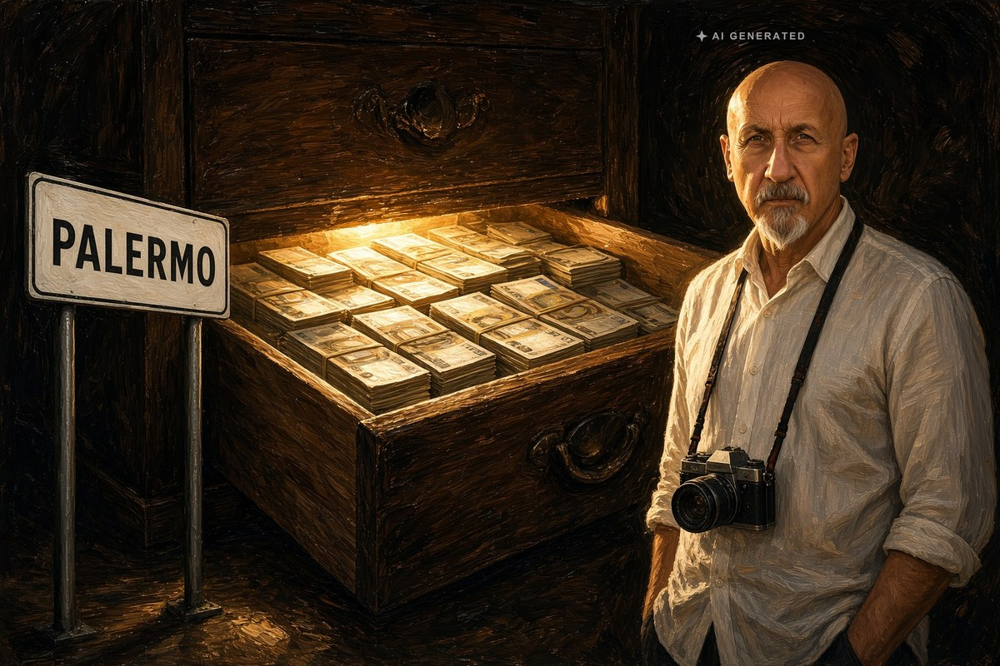

Cronaca · 27 ottobre 2026
Certificati comprati all'Asp di Palermo: due condanne già definitive

Un milione e duecentomila euro in contanti trovati in casa, pensioni di invalidità costruite su certificati firmati senza visita e presidi ortopedici pagati anche in pesce e vino. Il processo a un imprenditore comincia a dicembre.
di Franco Zanghì
Sono arrivate nelle settimane scorse, e si sono sapute soltanto adesso, due condanne definitive per il giro di certificati falsi e mazzette che ruotava intorno all'Azienda sanitaria provinciale di Palermo. Giuseppe Nicoletti, commerciante di tessuti e tendaggi, ha patteggiato 4 anni. Leonardo Armando Gaziano, ortopedico, allora medico dell'Asp alla Casa del Sole e nel distretto sanitario di Bagheria, ha patteggiato 2 anni e 8 mesi. Entrambe le condanne sono state pronunciate dal giudice per l'udienza preliminare Emanuela Carabotta.
Il patteggiamento chiude il processo e non è un accertamento pieno delle responsabilità, ma è una condanna, ed è l'ultima parola.
Il contante nelle scatole
Il filone era partito nel marzo 2026, quando i poliziotti della squadra mobile avevano perquisito due appartamenti di Palermo cercando agende, telefoni e appunti. Dentro scatole e cassetti avevano trovato un milione e duecentomila euro in contanti. Non su un conto, non in cassetta di sicurezza: in casa.
Secondo l'accusa Nicoletti raccoglieva i clienti e portava avanti le pratiche per la pensione di invalidità di chi quella pensione non aveva diritto di avere; il certificato lo firmava Gaziano. I certificati, rilasciati senza visitare il paziente e con l'indicazione di malattie gravi, secondo le indagini venivano pagati da 100 a 250 euro l'uno, mentre al cliente veniva chiesta una somma modesta per il certificato. Il guadagno vero arrivava dopo, quando l'Inps liquidava gli arretrati, e dalle intercettazioni emerge la regola: metà di quanto arrivava restava a chi aveva curato la pratica. A marzo le pratiche su cui gli investigatori erano riusciti a mettere le mani erano una quindicina.
Il secondo filone: busti, plantari e pesce fresco
Gaziano, sempre secondo l'accusa, prendeva denaro anche dalle ditte che vendono presidi ortopedici, busti, plantari, tutori e carrozzine: prescriveva e indirizzava i pazienti verso le aziende disposte a pagare. I pagamenti avvenivano in denaro, ma anche in pesce fresco, gamberoni di Mazara del Vallo, astici, olio e vino. Nelle intercettazioni il medico spiega che i busti li prescrive a una ditta sola e che manderà da lei tutti i pazienti.
Per uno degli imprenditori, Massimiliano Contino, amministratore unico di una ditta di materiale ortopedico di Tommaso Natale, i pubblici ministeri Gianluca De Leo e Andrea Zoppi hanno ottenuto il giudizio immediato: il processo comincia a dicembre davanti alla terza sezione del tribunale. Per lui vale la presunzione d'innocenza fino alla sentenza definitiva.
Chi doveva accorgersene
Dentro un'azienda sanitaria pubblica, con i suoi uffici, i suoi dirigenti e i suoi controlli, il sistema è andato avanti per anni. A farlo emergere non è stato un controllo interno, né un'ispezione, né una verifica sulle prescrizioni: è stato un imprenditore che di quel sistema aveva approfittato e che a un certo punto ha deciso di raccontarlo ai magistrati.
Resta aperta la questione delle pensioni nate da quei certificati. Un'invalidità civile totale con l'indennità di accompagnamento vale oggi oltre 11.000 euro l'anno, che escono dall'Inps ogni dodici mesi; non risulta che sia stata annunciata una verifica, pratica per pratica, delle posizioni collegate all'inchiesta.
Fonti
- La Sicilia, «Certificati medici falsi e mazzette, due condanne a Palermo», 27 ottobre 2026
- Diretta Sicilia, «Scandalo sanità a Palermo, soldi, olio, pesce e gamberoni in cambio di false invalidità», 27 ottobre 2026
- Ansa, «Mazzette all'Asp di Palermo per favorire aziende, tre arresti», 7 marzo 2026
- Giornale di Sicilia, «Corruzione nella sanità a Palermo, mazzette e aragoste: eseguite sei misure», 7 marzo 2026
- PalermoToday, «Mazzette all'Asp per favorire ditte e rilasciare certificati falsi: scattano tre arresti», 7 marzo 2026
- LiveSicilia, «Corruzione nella sanità, la confessione e gli arresti», marzo 2026
- Inps, importi 2026 della pensione di inabilità civile e dell'indennità di accompagnamento
Le due condanne sono state riportate per prima da La Sicilia e riprese il giorno stesso da Diretta Sicilia. Il prezzo del singolo certificato varia fra le fonti, da 100 a 250 euro secondo l'articolo di ottobre e da 100 a 500 euro secondo le cronache del marzo 2026. La qualifica di ex medico dell'Asp per Leonardo Armando Gaziano risulta da una sola fonte, e non è stato reperito l'atto che chiude il rapporto di lavoro. Non è nota la data dell'udienza di dicembre.